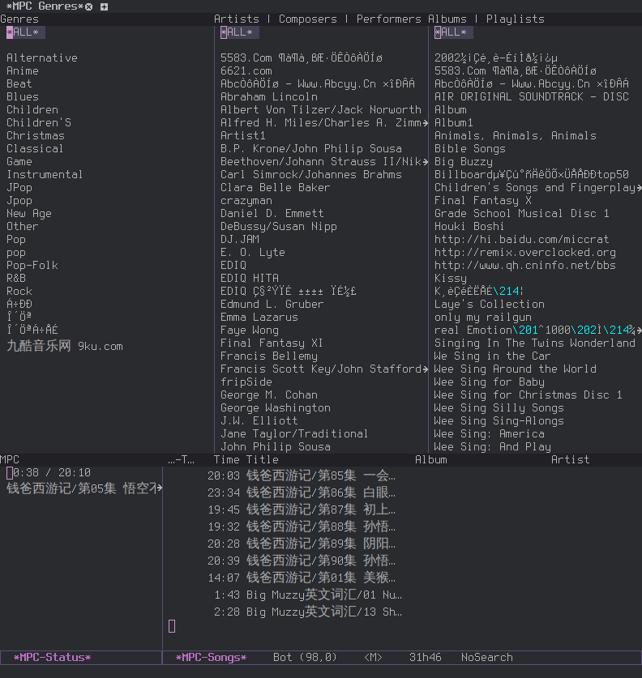

Emacs 作为 MPD 客户端
今天才知道，Emacs居然内置了一个 mpc.el 可以将 Emacs 转换为 MPD(Music Player Daemon)客户端。
设置
(setq mpc-host "192.168.31.9:6600")
192.168.31.9:6600
执行 命令,进入 mpc 控制界面

- 快捷键
- < (mpc-next)
- 上一首歌
- > (mpc-previous)
- 下一首歌
- g (mpc-seek-current)
- 设置当前歌曲的播放进度
- s (mpc-toggle-play)
- 播放/暂停
- g (mpc-seek-current)
- 设置当前歌曲的播放进度
- mpc-toggle-{consume,repeat,single,shuffle}
- 设置播放模式
- q (mpc-quit)
- 退出